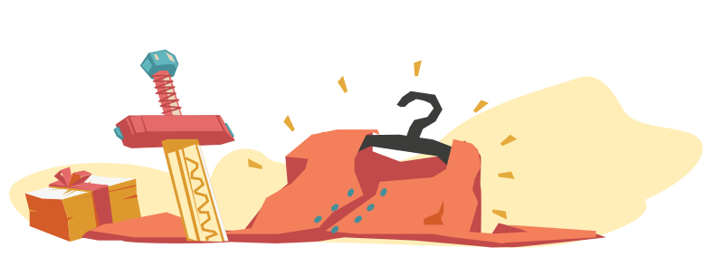

Identität – wer ich in Gottes Augen bin
Fragst du dich manchmal: Reiche ich? Bin ich genug für mein Umfeld? Bin ich genug in Gottes Augen? Oftmals definieren wir uns darüber, was wir tun, ob wir genug Leistung bringen und dankbar sind, doch in Gottes Augen ist es anders.
Plant für diese Lektion 40 Minuten ein.
Austauschen Tauscht zuerst einmal zusammen aus
Entdecken
Durch unseren Neustart im Leben, sind wir in eine Beziehung mit Gott gekommen.
Wie fühlt sich diese Beziehung an?
Gibt es bei dir Situationen, in denen du dich ganz nahe bei Gott fühlst?
Gab es auch schon Situationen, in denen du dich gefragt hast, ob die Beziehung noch existiert?
Oder ob Gott dich überhaupt liebt?
Um die Beziehung mit Gott zu verstehen, ist es hilfreich, wenn wir den geschichtlichen Kontext der Bibel besser kennen.
Die Bibel hat einen orientalischen Hintergrund. Dort werden Beziehung anders gelebt als hier im Westen. Bei uns wird vieles über Verträge geregelt. Zum Beispiel der Mietvertrag: Ich muss monatlich meine Miete zahlen, dann darf ich in der Wohnung bleiben. Zahle ich meine Rechnungen nicht rechtzeitig oder versäume ich überhaupt die Miete zu bezahlen, wird mein Vertrag gekündigt und ich muss ausziehen.
Im Orient hat man Beziehungen zwischen Menschen nicht mit einem Vertrag, sondern mit einem Bund geregelt.
Doch was ist ein Bund? Kennt ihr heute noch einen Bund?

Um besser zu verstehen, was ein Bund ist, schauen wir uns eine Geschichte von zwei Männern an. Der eine ist David, ein Hirtejunge in Israel, aus einer ganz normalen israelitschen Familie (1. Samuel 16,11). Weil David an den Königshof gerufen wird, um dem König Saul mit der Harfe vorzuspielen, lernt er Jonatan kennen – den Sohn von Saul. David und Jonatan, die aus so verschiedenen sozialen Schichten kommen, werden Freunde und schliessen einen Freundschaftsbund:
Jonatan schloss mit David einen Freundschaftsbund, weil er ihn liebte wie sein eigenes Leben und besiegelte ihn, indem er ihm sein Gewand, seine Rüstung, sein Schwert, seinen Bogen und seinen Gürtel schenkte.
1. Samuel 18,3-4
Die Schliessung eines Bundes wird mit einigen Zeichen bezeugt und fest gemacht. In diesem Fall schenkt Jonatan dem David seinen Mantel und seinen Gürtel mitsamt den Waffen. Was bedeuten diese Zeichen?
Der Mantel war in dieser Zeit das wichtigste Kleidungsstück. Er war quasi die Lebensverscherung: Er schützte vor der Sonne des Tages und vor der Kälte der Nacht. Gleichzeitig symbolisiert der Mantel den Status einer Person. Wenn hier also der Königssohn Jonatan dem Hirtenjunge David seinen Mantel gibt, so gibt er ihm ein neues Leben und einen neuen Status. Genau das gleiche hat Jesus gemacht, als er für uns gestorben ist. Er hat uns seinen Mantel angezogen (Jesaja 61,10) und uns damit neues Leben und neue Identität geschenkt. Paulus schreibt dazu:
Das bedeutet aber, wer mit Christus lebt, wird ein neuer Mensch. Er ist nicht mehr derselbe, denn sein altes Leben ist vorbei. Ein neues Leben hat begonnen! 2. Kor 5.17
Zudem gibt Jonatan David seinen Waffen. Bis anhin hat David als Hirte nur mit seinen Fäusten, der Steinschleuder und seinem Stab gekämpft (1. Sam 17, 34-35; 39-40). Doch nun erhält er von Jonatan Rüstung, Schwert und Pfeilbogen. Zu dieser Zeit waren solche Waffen rar und daher sehr wertvoll (1. Sam. 13,22). Genauso ist es auch mit Jesus. Er bietet uns an, unsere eigenen Waffen niederzulegen und stattdessen mit seinen Stärken und seinen Waffen zu kämpfen:
Noch ein Wort zum Schluss: Werdet stark durch den Herrn und durch die mächtige Kraft seiner Stärke! 11 Legt die komplette Waffenrüstung Gottes an, damit ihr allen hinterhältigen Angriffen des Teufels widerstehen könnt.
Epheser 6, 10-11
Dieser Bund zwischen David und Jonatan hatte für ihr ganzes Leben und darüber hinaus Bestand. Selbst als es grosse Schwierigkeiten zwischen David und dem König Saul – dem Vater Jonatans gab, stand Jonatan treu zu David (1. Samuel 20). Und nach Jonatans Tod, hat sich David um die Nachfahren von Jonatan gekümmert (2. Samuel 9).
So kommt David völlig unverdient zu diesem Freundschaftsbund damit auch ein neues Leben, einen neuen Status und neue Stärken und Waffen.
An diesem Beispiel wird der Unterschied zwischen einem Vertrag und einem Bund deutlich: Bei einem Vertrag müssen wir immer darauf achten, dass wir unsere Bedingungen erfüllen. Schon ein Fehlverhalten, eine Nicht-Erbringung einer Leistung kann dazu führen, dass der Vertrag wieder gekündigt wird. Die Wirkung des Bundes hingegen ist lebenslänglich, ja geht sogar darüber hinaus. Der Bund ist so stark, dass es sogar Fehlverhalten unserer Seite leiden mag. Genau so wie ein Kind bei einem Fehlverhalten teil der Familie bleibt, bleiben wir Gottes Kinder.
Dieses Verständnis vom Bund ist entscheidend für unsere Beziehung mit Jesus. Jesus spricht kurz vor seinem Tod davon, dass er einen neuen Bund mit seinen Jüngern schliessen wird:
Expand BiblequoteWährend sie aßen, nahm Jesus einen Laib Brot, dankte und bat Gott um seinen Segen. Dann brach er ihn in Stücke und gab sie den Jüngern mit den Worten: »Nehmt und esst, denn das ist mein Leib.« Und dann nahm er einen Becher mit Wein und dankte Gott dafür. Er gab ihn seinen Jüngern und sagte: »Jeder von euch soll davon trinken, denn das ist mein Blut, das den Bund zwischen Gott und den Menschen besiegelt. Es wird vergossen, um die Sünden vieler Menschen zu vergeben.
Matthäus 26, 26-28.
Mit seinem Tod hat Jesus also einen neuen Bund geschaffen, der uns die Möglichkeit gibt, mit Gott in Beziehung zu treten. Im Gegensatz zum ersten Bund, der im Alten Testament zwischen Gott und dem Volk Israel geschlossen wurde, steht der neue Bund allen Menschen auf dieser Welt offen. Zudem beruht er nicht auf der Einhaltung der jüdischen Gesetze, sondern auf dem Wirken des Heiligen Geistes an unseren Herzen:
Er hat uns befähigt, Diener seines neuen Bundes zu sein, eines Bundes, der nicht auf schriftlichen Gesetzen beruht, sondern auf dem Geist Gottes
2. Korinther 3.6
Zur Erinnerung, dass wir mit Gott in einem solch neuen Bundesverhältnis stehen, feiern wir immer wieder das Abendmahl.
Manchmal haben wir das Gefühl, dass uns zwar durch den Tod Jesu am Kreuz das ewige Leben geschenkt wird, dass wir uns die Liebe Gottes irgendwie verdienen müssen. Doch die Bibel sagt, dass wir durch den neuen Bund zu Kindern Gottes geworden sind. Diese Gotteskindschaft gilt für immer – gerade auch in schwierigen Situationen.
Expand BiblequoteAll denen jedoch, die ihn aufnahmen und an seinen Namen glaubten, gab er das Recht, Gottes Kinder zu werden.
Johannes 1,12Seht doch, wie groß die Liebe ist, die uns der Vater erwiesen hat: Kinder Gottes dürfen wir uns nennen, und wir sind es tatsächlich! Doch davon weiß die Welt nichts; sie kennt uns nicht, weil sie ihn nicht erkannt hat.
1. Johannes 3,1
Markus hat immer wieder diese tiefe Frage zur Identität bewegt und gemerkt, dass allein Gott der Vater diese Identität stillen kann. Im Video erklärt er, wie Gott ihm immer wieder als Vater begegnet.
Nicht nur das Wort Gottes bezeugt uns, dass wir Gottes Kinder sind. Sondern Gott hat uns den Heiligen Geist geschenkt, der in uns wohnt und nebst dem, dass er uns Gaben schenkt, hat der Heilige Geist noch eine weitere Aufgabe:
Expand BiblequoteAlle, die sich von Gottes Geist leiten lassen, sind seine Söhne ´und Töchter`. 15 Denn der Geist, den ihr empfangen habt, macht euch nicht zu Sklaven, sodass ihr von neuem in Angst und Furcht leben müsstet; er hat euch zu Söhnen und Töchtern gemacht, und durch ihn rufen wir, ´wenn wir beten`: »Abba, Vater!« 16 Ja, der Geist selbst bezeugt es uns in unserem Innersten, dass wir Gottes Kinder sind.
Römer 8, 14-16
Der Heilige Geist erinnert uns immer wieder daran, dass wir nun Gottes Kinder sind. Dies ist unsere Identität!
Weil wir Gottes Kinder sind und Gott der wahre König von Himmel und Erde ist, sind wir auch Bürger seines Königreiches (Philliper 3.20). Als solche sind wir in diese Welt gesandt als seine Botschafter, um den Menschen das Reich Gottes zu verkünden und sie zur Versöhnung mit Gott aufzurufen (2. Korinther 5,20). Wie das Reich Gottes funktioniert und was dies mit unserem Alltag zu tun hat, ist das Thema der nächsten Lektion.
In unserem Leben gibt es immer wieder Situationen, in denen unsere Gefühle uns sagen, wir seien weit von Gott entfernt. Oder wir müssten uns die Liebe Gottes verdienen. Genau dann ist es wichtig, unsere Identität zu kennen, die das Wort Gottes über uns ausspricht.
Hier ein paar weitere Aussagen, wer wir sind in Gott:
- ... eine neue Schöpfung, neuer Mensch in Christus 2.Kor 5,17: Das bedeutet aber, wer mit Christus lebt, wird ein neuer Mensch. Er ist nicht mehr derselbe, denn sein altes Leben ist vorbei. Ein neues Leben hat begonnen!
- ... ein Kind Gottes Joh 1,12: All denen aber, die ihn aufnahmen und an seinen Namen glaubten, gab er das Recht, Gottes Kinder zu werden.
- ... ein Freund Gottes Joh 15,15: Ich nenne euch nicht mehr Diener, weil ein Herr seine Diener nicht ins Vertrauen zieht. Ihr seid jetzt meine Freunde, denn ich habe euch alles gesagt, was ich von meinem Vater gehört habe.
- ... ein Tempel des Heiligen Geistes 1.Kor 6,19: Oder wisst ihr nicht, dass euer Leib ein Tempel des Heiligen Geistes in euch ist, der in euch lebt und euch von Gott geschenkt wurde? Ihr gehört nicht euch selbst,
- ... ein Glied am Leib Christi 1.Kor 12,27: So bildet ihr gemeinsam den Leib von Christus, und jeder Einzelne gehört als ein Teil dazu.
- ... ein Erbe von Gott und Miterbe mit Christus Röm 8,17: Und als seine Kinder sind wir auch Miterben an seinem Reichtum - denn alles, was Gott seinem Sohn Christus gibt, gehört auch uns. Doch wenn wir an seiner Herrlichkeit teilhaben wollen, müssen wir auch seine Leiden mit ihm teilen.
- .... verwandelt in sein Ebenbild 2.Kor 3,18: Von uns allen wurde der Schleier weggenommen, sodass wir die Herrlichkeit des Herrn wie in einem Spiegel sehen können. Und der Geist des Herrn wirkt in uns, sodass wir ihm immer ähnlicher werden und immer stärker seine Herrlichkeit widerspiegeln.
- ... ein Bürger des Himmels Phil 3,20: Aber unsere Heimat ist der Himmel, wo Jesus Christus, der Herr, lebt. Und wir warten sehnsüchtig auf ihn, auf die Rückkehr unseres Erlösers.
- ... eine Rebe am Weinstock Joh 15,5: Ich bin der Weinstock; ihr seid die Reben. Wer in mir bleibt und ich in ihm, wird viel Frucht bringen. Denn getrennt von mir könnt ihr nichts tun.
- ... ein Botschafter der Versöhnung 2.Kor 5,20: So sind wir Botschafter Christi, und Gott gebraucht uns, um durch uns zu sprechen. Wir bitten inständig, so, als würde Christus es persönlich tun: »Lasst euch mit Gott versöhnen!«
- ... Salz und Licht der Welt Mt 5,13-14: Ihr seid das Salz der Erde. Doch wozu ist Salz noch gut, wenn es seinen Geschmack verloren hat? Kann man es etwa wieder brauchbar machen? Es wird weggeworfen und zertreten, wie etwas, das nichts wert ist.
Tun
- Was hat Gott zu mir gesprochen?
- Was mache ich damit?
- Wem erzähle ich das weiter, was ich heute gekriegt habe?
Challenge
Lies die Liste durch, wer du in Christus bist. Streiche dir die zwei oder drei wichtigsten Punkte an und lerne diese Verse auswendig.Feiert zusammen das Abendmahl und mach dir bis zum nächsten Treffen täglich diesen Bund bewusst, indem du das Abendmahl nimmst.
Gebet Schliesst eure Zeit mit Gebet ab und erzählt Gott, was euch beschäftigt

Gratuliere!
Das war Kapitel 7. Schon wartet das nächste Kapitel auf euch.
Macht doch dafür gleich einen Termin ab!